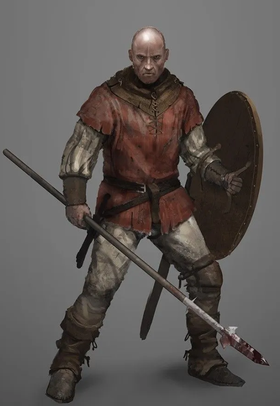
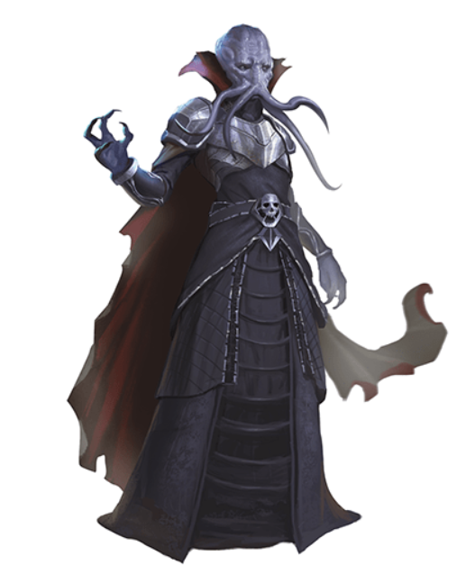
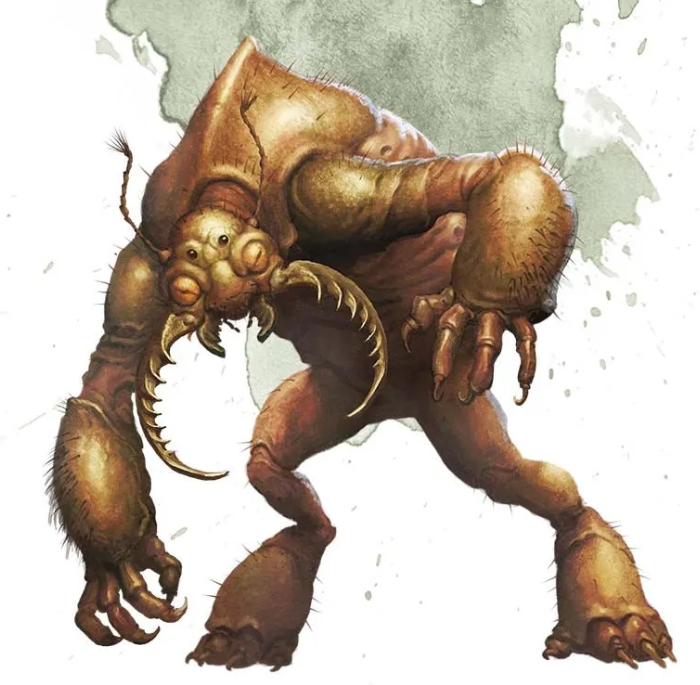
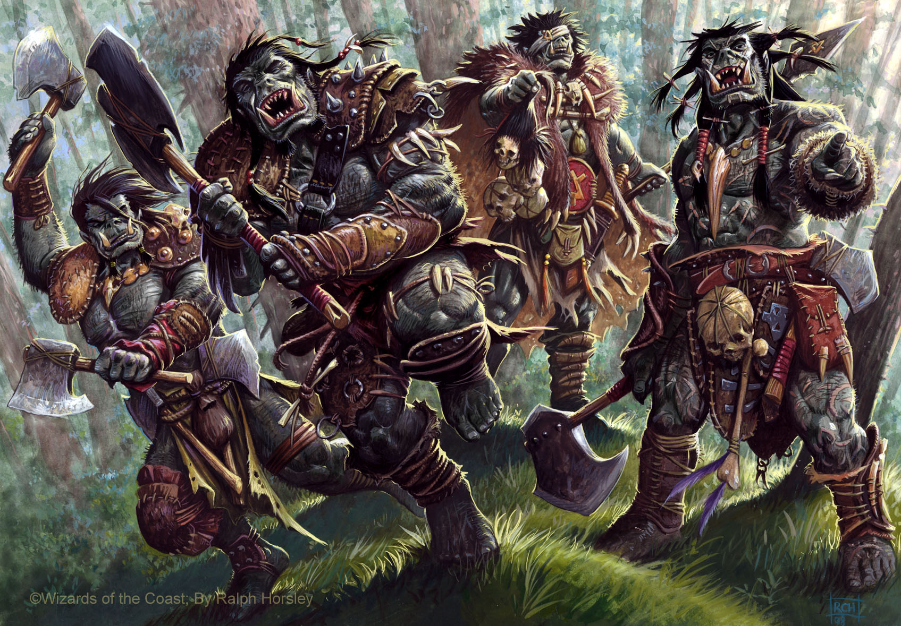

Goblins are small creatures with swarm tactics that tend to exist in the early stages of a campaign. Whilst they are usually the first creature the party tends to encounter, they can vary in power and demeanor to make them stronger than their generic counterparts, but most campaigns usually have Goblins as their first enemy to encounter.
They often utilize shortbows and shortswords whilst running around the party to deliver decent damage, and most level one adventurers will be downed from a single shot of an arrow or stab of a shortsword if a goblin hits well enough, espescially the less healthy individuals such as casters and similar. But ultimately, they are the perfect starting adventure enemy type.

Similarly to Goblins in the sense that they could be used for early adventures, but not at level one due to the fact they don't often die in one hit and can actually pack a punch, whilst not as clever or cunning as a group of goblins, a group of bandits can be more deadly by damage output and healthpool alone.
Though whilst not as dangerous as the creatures I'll talk about below, a group of bandits could hurt or destroy a party if they are not careful or strategic, espescially at lower levels. These enemies could also be creatively used to make variants for later levels like goblins can be.

Mindflayers are intelligent, psionic creatures that serve as formidable opponents in D&D campaigns. They are known for their ability to read minds and control the thoughts of their victims, making them particularly dangerous adversaries.
You often will encounter these much later in the campaign unless your DM hates you. As they could easily kill a party member without much effort or ruin the action economy.

Umbral Hulks are massive, insectoid creatures that inhabit the darker corners of the D&D world. They are known for their incredible strength and resilience, making them formidable opponents for even the most experienced adventurers. Having the ability to burrow and create their own pathways given time, and utilize its unnatural gaze to confuse party members and waste their movement or action depending on the charisma save they're hit with.
These creatures are often encountered in cave systems, the Underdark, or dungeons, having a particular taste for humanoid creatures such as dungeon delving party members.

Orcs are the bigger, angrier cousins of Goblins. Both green, but Orcs are bigger, angrier, and stronger than their goblin counterparts. They utilize more aggressive in your face combat tactics over cunning hit and run. Their formidability is what makes them dangerous, as they can use bonus actions to run up to nearby enemies and give them no breathing room.
The use of these creatures vary, I haven't really seen orcs in my campaigns used yet or at all, but they have enough HP and their rushing passive will make most fights hard due to the fact they can rush party members down and strike them before they have a chance to retaliate. Similarly to Goblins and Bandits too, the DM can make variants off the stat blocks to reuse for later levels once the party grows stronger.